Vue d'ensemble
D'un village de pêcheurs à la Petite Côte
Ancien village lébou et sérère devenu en quelques décennies un pôle touristique majeur au Sénégal, Mbour conjugue traditions de la pêche, mémoire coloniale et modernité.
Mbour est historiquement un village de pêcheurs lébou et sérère, installé sur la façade atlantique du Sénégal. Sa position au bord de l'océan, entre terre et mer, en a fait très tôt un lieu d'échanges et de vie communautaire intense. Aujourd'hui encore, le port de pêche de Mbour reste l'un des plus actifs du pays : chaque retour de pirogue est un spectacle de couleurs et de cris.
Le tournant majeur se joue dans les années 1970, avec l'aménagement de la station de Saly Portudal. Jusque-là modeste, ce qui deviendra la Petite Côte attire les investisseurs, les opérateurs touristiques et une clientèle internationale en quête de plages, de soleil et d'authenticité. Le littoral se couvre d'hôtels, de clubs de vacances et de résidences.
Depuis, le département n'a cessé d'attirer. Aujourd'hui, il concentre près de 90 % des réceptifs hôteliers de la région de Thiès. Le long de sa façade maritime, de Toubab Dialaw au nord à Joal-Fadiouth au sud, se succèdent stations balnéaires, réserves naturelles, lagunes, falaises et villages de pêcheurs préservés.
Cinq moments-clés
Un port de pêche majeur
Mbour n'est pas seulement une station balnéaire. C'est avant tout une ville portuaire dont l'activité façonne le quotidien de ses habitants.
L'héritage des pêcheurs lébous et sérères
Historiquement installée sur la façade atlantique, la ville s'est construite autour de la pêche. Aujourd'hui encore, le port de Mbour figure parmi les plus actifs du Sénégal.
Chaque fin d'après-midi, le retour des pirogues colorées offre un spectacle vivant. Les pêcheurs débarquent leurs prises, qui alimentent les marchés locaux et une grande partie de la région. C'est une économie parallèle, essentielle à la vie de la cité, qui côtoie les grands complexes hôteliers de la Petite Côte.

Le tourisme, une transformation du territoire
Depuis les années 1970, l'aménagement de la station de Saly a profondément modifié le visage du département, faisant de Mbour le poumon économique de la région de Thiès.

Une concentration d'infrastructures
Selon les données de l'ANSD (2024), le département de Mbour concentre près de 90 % des réceptifs hôteliers de toute la région de Thiès.
Le long de sa façade maritime, de Toubab Dialaw à Joal-Fadiouth, se succèdent des stations balnéaires internationales, des réserves naturelles et des villages de pêcheurs préservés. Ce dynamisme touristique soutient l'emploi local tout en posant des défis de préservation de l'environnement et des équilibres sociaux.
Le Kankourang
Inscrit au patrimoine culturel immatériel de l'UNESCO, ce rite initiatique mandingue rythme la vie de Mbour chaque année pendant la période des vacances.
Un rite d'initiation et de protection
Le Kankourang est un rite de circoncision et d'initiation mandingue. Le personnage central est un initié masqué, vêtu de fibres végétales et muni de machettes, qui incarne la protection de l'ordre social et spirituel.
Les sorties ont lieu chaque année pendant la période des vacances, généralement entre les mois d'août et de septembre, selon le calendrier lunaire. À Mbour, cette période est un temps fort de la vie culturelle locale, marquée par des processions et des veillées.

Le Circuit Balnéaire
De la lagune de la Somone aux coquillages de l'île de Fadiouth, en passant par la réserve de Bandia et les falaises de Toubab Dialaw, découvrez les 12 sites emblématiques de la Petite Côte à travers notre circuit interactif.
Explorer le circuit balnéaireMbour en images
Océan, pirogues, vie de pêcheurs, plages dorées et paysages de lagune : la Petite Côte dans toute sa diversité.
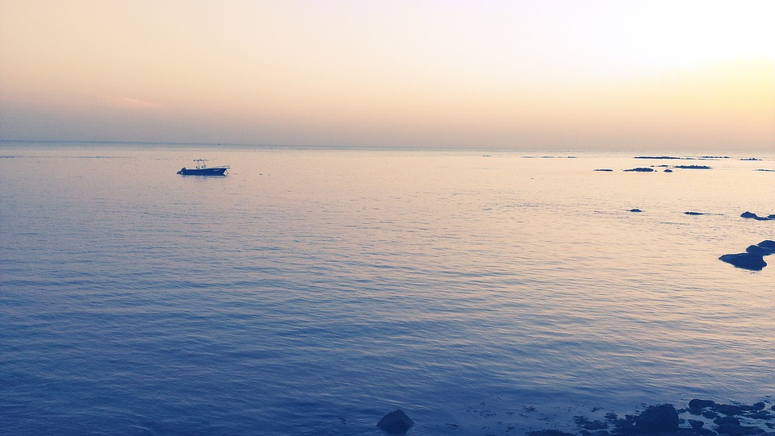
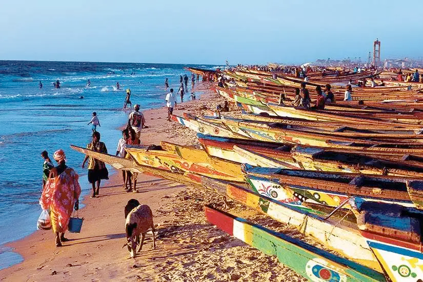
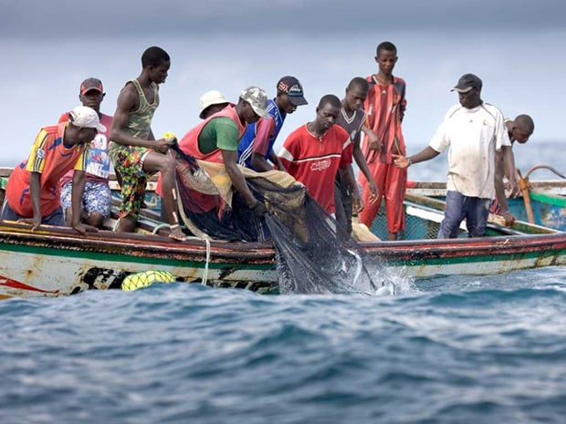
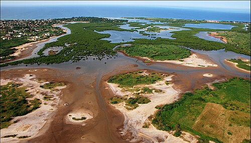
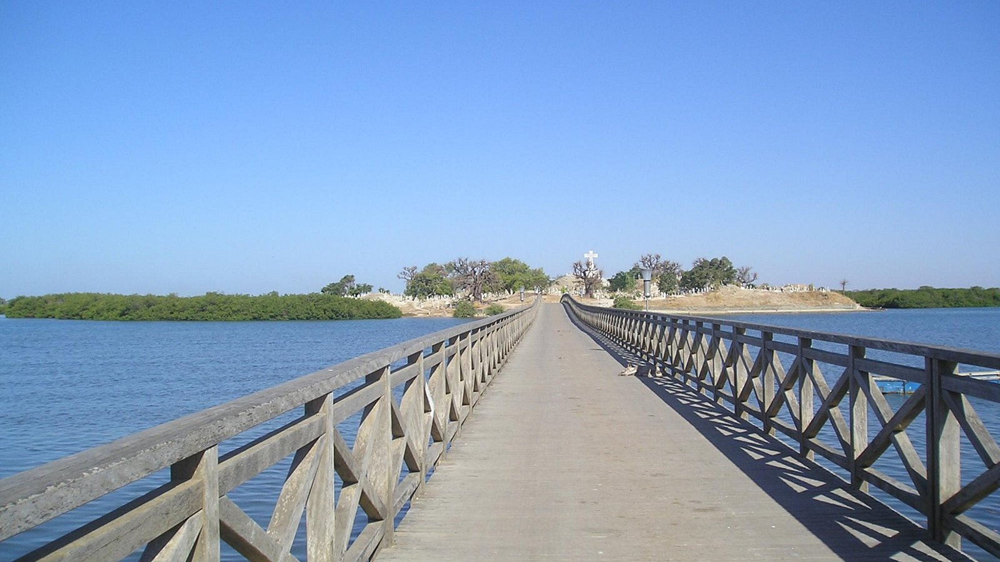
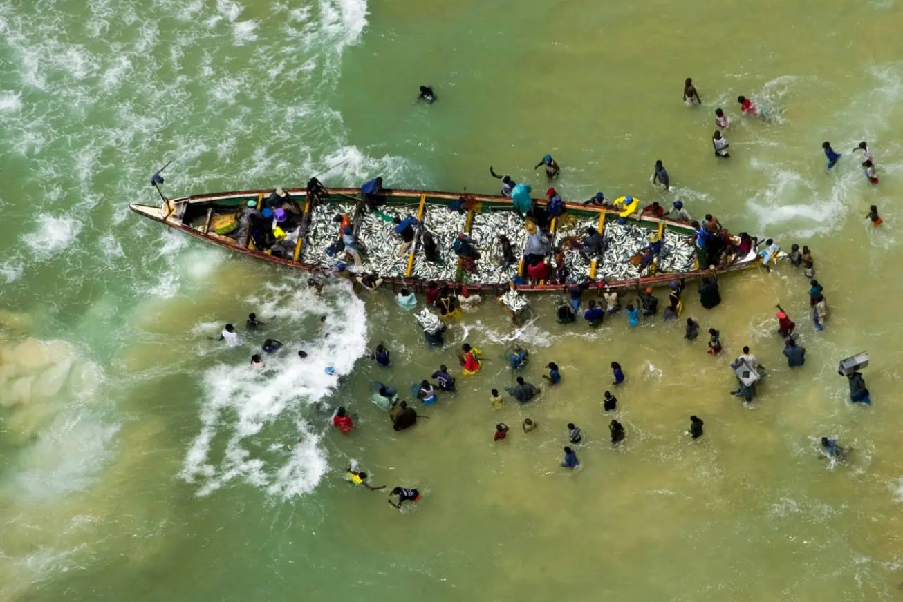
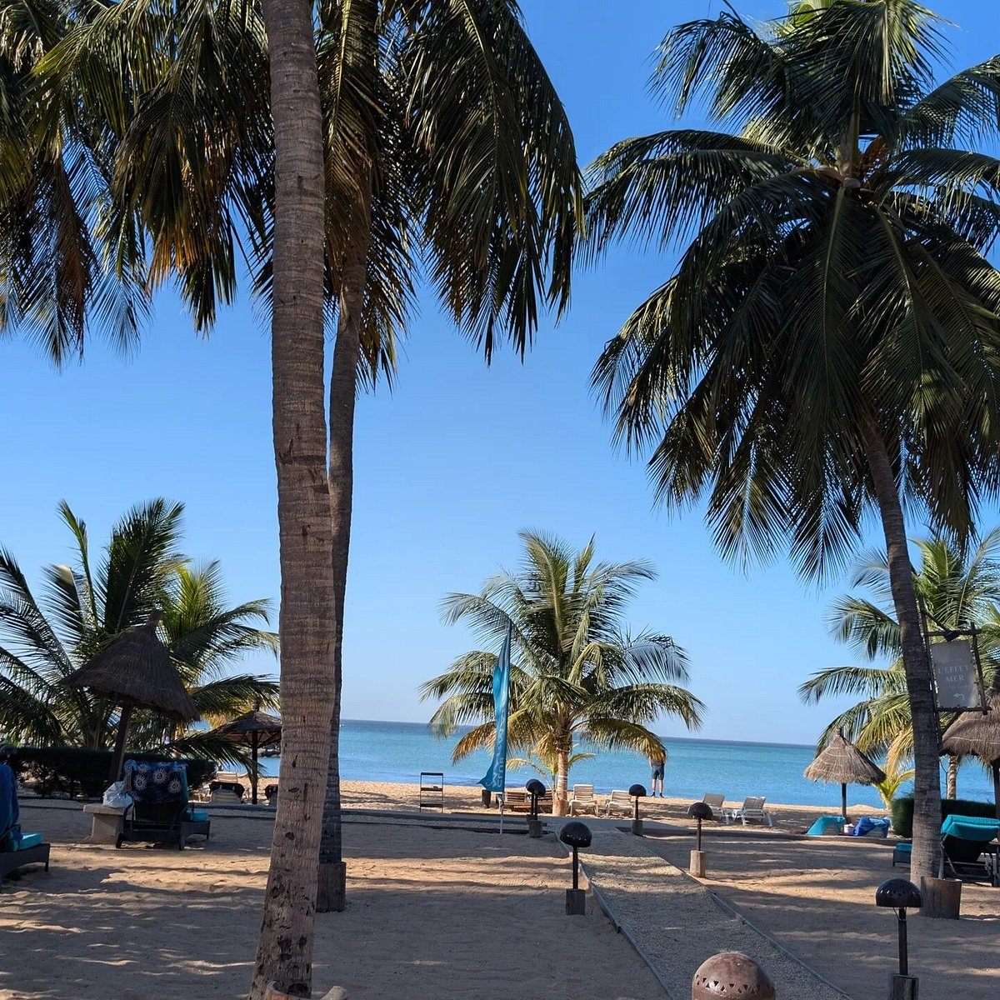
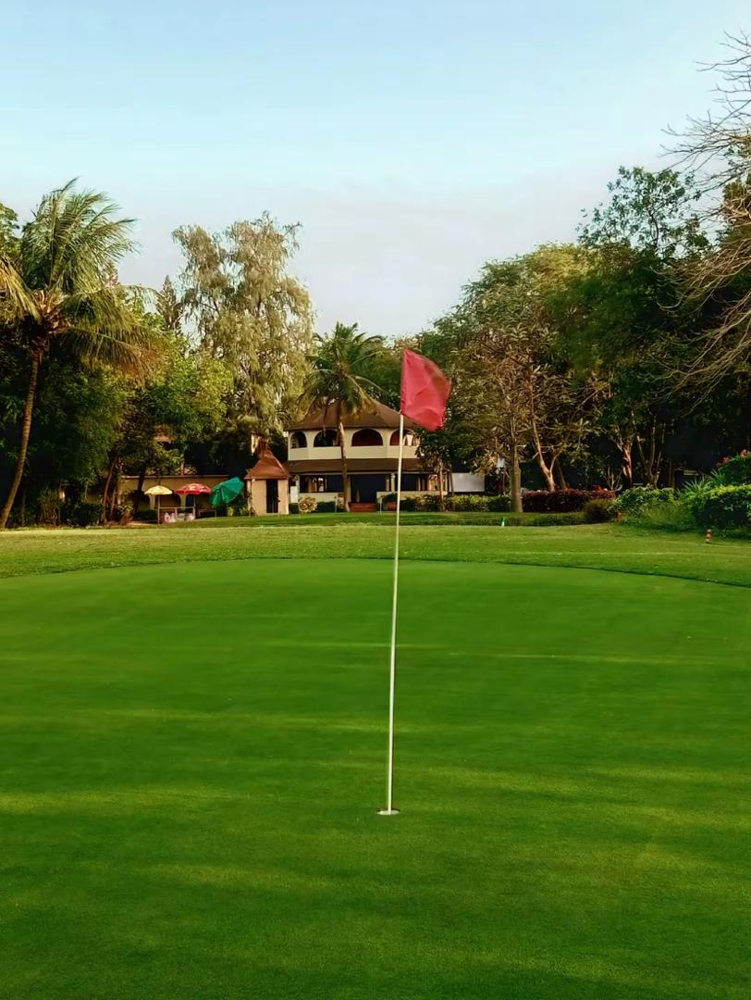
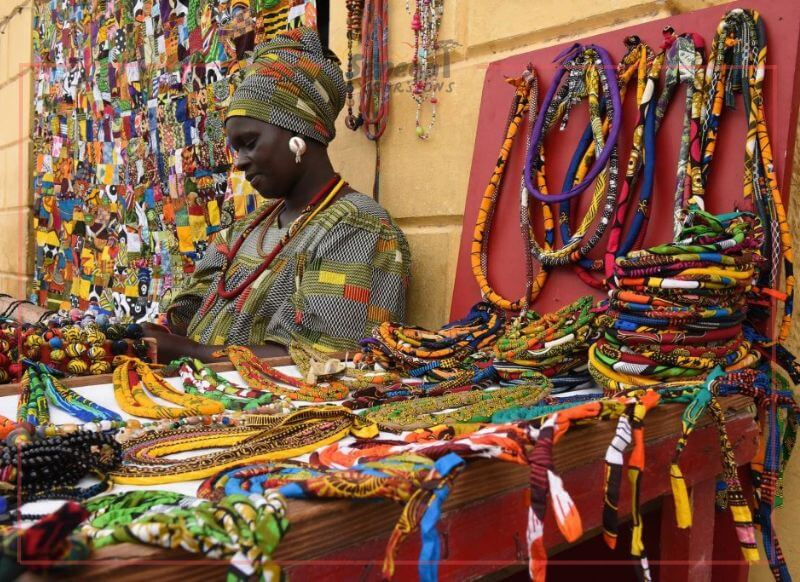
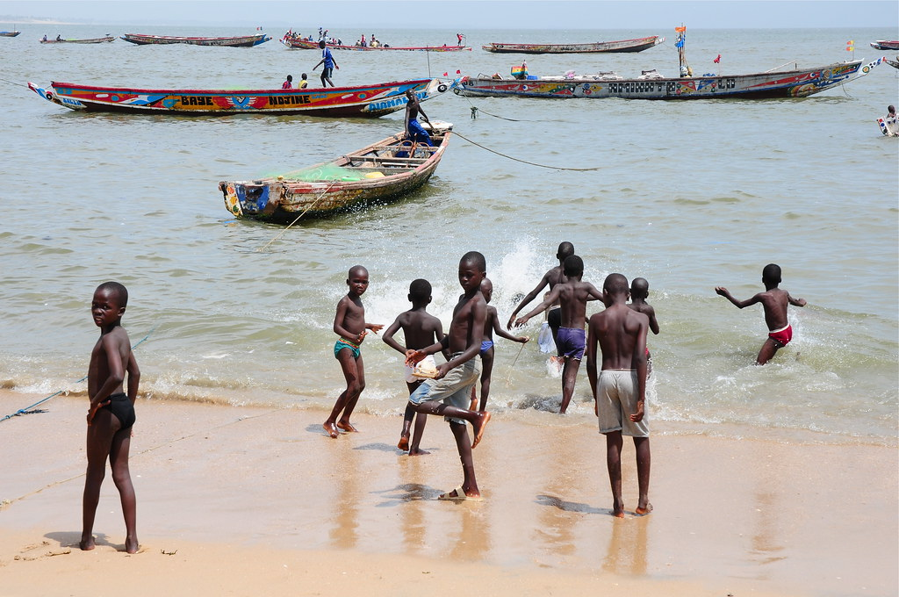
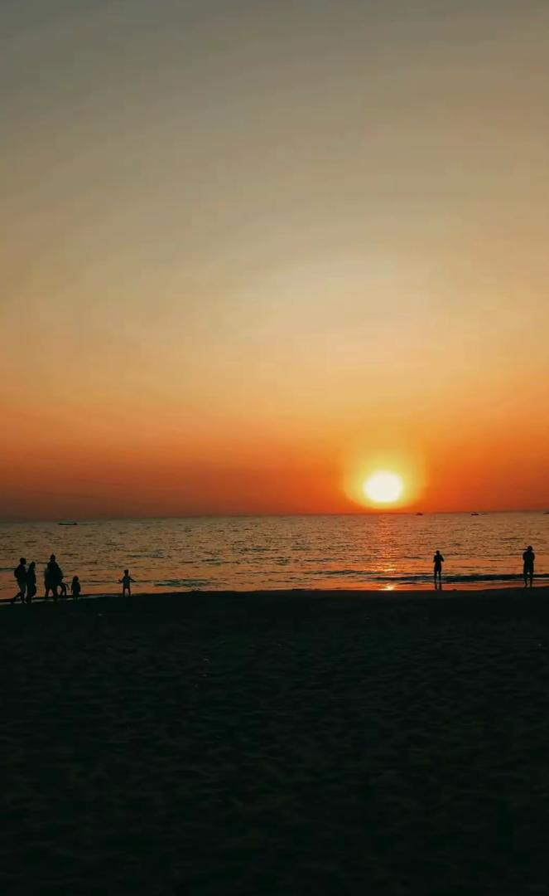
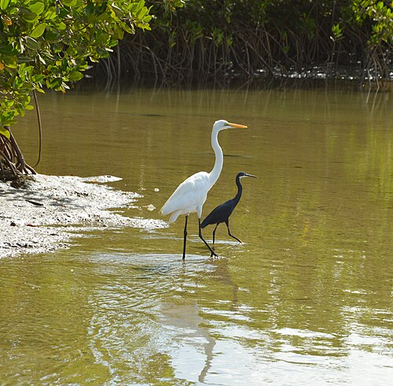
Le meilleur moment
Mbour bénéficie d'un climat sahélien doux toute l'année, mais la saison sèche (novembre–mai) est idéale pour profiter pleinement des plages. Le littoral est baignable quasiment 12 mois sur 12.
Comment venir
Mbour est reliée aux principaux axes du pays. Que vous veniez de Dakar, de l'aéroport international ou des villes voisines, plusieurs options s'offrent à vous.
Route N1 depuis Dakar
Environ 80 km par la route nationale 1. Comptez entre 1h15 et 2h selon le trafic. La sortie de Mbour permet de rejoindre la N1 sans traverser le centre-ville.
Bus & taxis-brousse
Départs réguliers depuis la gare routière de Dakar (Beaux Maraîchers). La nouvelle gare routière de Mbour a été mise en service en décembre 2019 pour faciliter les correspondances.
Aéroport international (AIBD)
L'aéroport Blaise-Diagne (Diass) est situé à environ 40 km de Mbour. Des navettes et taxis privés assurent la liaison en 35 à 55 minutes selon le trafic.
Transports urbains & locaux
Des taxis desservent la ville et les stations voisines (Saly, Ngaparou, Somone). Comptez environ 500 à 800 FCFA pour un trajet court, et 200 à 300 FCFA par personne pour les trajets en taxi collectif ("clando") vers Saly.
Ce qu'ils en disent
Des retours authentiques de voyageurs ayant exploré la Petite Côte, collectés sur des plateformes communautaires.
Amazing day. very beautiful reserve with good staff. very knowleadgeble guide and super friendly. we loved how the animals were freely roaming.
Eagles, cormorants, fish, oyster beds, oyster fisher women and shallow lagoon waters surrounded by massive mangroves. Best done late afternoon so you can have a beer at Chez Rasta.
Nous rentrons d’un séjour de 10 nuits à Thies à la Somone dans l’hôtel Royal Baobab. Superbe séjour, superbe hôtel !
Explorez la Petite Côte sur le Géoportail
Notre géoportail vous permet d'explorer interactivement Mbour et toute la Petite Côte : plages, réserves, hébergements, restaurants, itinéraires, mesure de distances, export PDF.
Sources & Références
- Statistiques touristiques : ANSD – Situation Économique et Sociale de Thiès (2024).
- Réserve de Bandia : Site officiel de la Réserve.
- Île de Fadiouth & Joal : Agence de Presse Sénégalaise (APS) et Le Soleil.
- Lagune de la Somone : Convention Ramsar (Fiche et plan de gestion).
- Le Kankourang : UNESCO, fiche du patrimoine immatériel.
- Toubab Dialaw : Site officiel de l'École des Sables.
Dernière mise à jour des données : Février 2026.